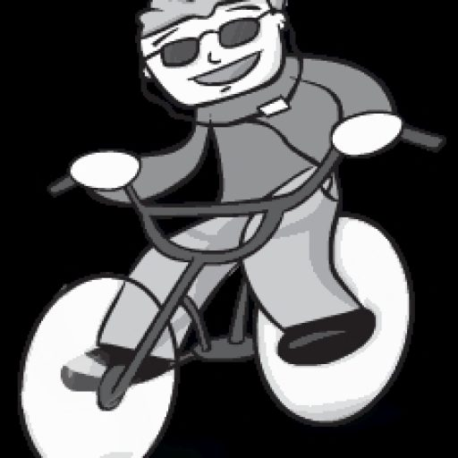

Kabui Charles 
Founder & Engineer | ToKnow.ai | Blober.io | mckabue.com
mckabue@gmail.com | linkedin.com/in/mckabue | github.com/mckabue
Profile
Ten years building software. I now work full-time on Oark, writing at ToKnow.ai and building Blober.io. Before that, I spent five years at Microsoft building AI-powered, agentic experiences in M365 Copilot. Earlier I founded Oark Library and grew it to 130,000 users and 400,000 resources before archiving it in 2024. I hold an MSc in Data Science from Strathmore.
Work Experience
Founder, Oark
Jul 2026 - Present
- Writing at ToKnow.ai and building Blober.io
- Previously built Oark Library to 130,000 users; archived in 2024
Technologies: TypeScript, React, Python, Node.js, Azure, AWS
Full-stack Software Engineer, Microsoft
Apr 2021 - Jul 2026
- Built AI-powered, agentic experiences in M365 Copilot: Researcher, Copilot Chat, and the shared infrastructure underneath
- Developed and maintained enterprise components and services used across multiple teams
Technologies: ASP.NET, C#, TypeScript, React, Azure, KustoQL
Android Software Engineer, Hava Cab
Oct 2020 - Apr 2021
- Improved accuracy and reliability of the driver app under real-world constraints
- Refined core trip logic, which cut cost estimation errors
- Supported backend and frontend integration across mobile and web
Technologies: Android, Java, Kotlin, JavaScript, ReactJS
Full-stack Software Engineer, Maramoja Transport
May 2018 - Nov 2020
- Architected a corporate trip audit tool (marker-checker) used by enterprise clients
- Maintained the Node.js services behind the taxi platform
- Maintained the React web app and Android apps for clients and drivers
Technologies: JavaScript, ReactJS, NodeJS, Android, Java, MySQL
Full-stack Software Engineer, Pageone
Mar 2016 - Apr 2018
- Led development of Daktari.net, a healthcare portal that connected patients and doctors across Kenya
- Pushed early into serverless on Azure Functions and WebJobs before it was the obvious choice
- Integrated MPESA, Stripe, and PayPal into a production platform; payment APIs fail in ways their documentation does not cover
Technologies: ASP.NET MVC, C#, JavaScript, KnockoutJS, Azure
Freelance Software Engineer
Jan 2015 - May 2016
- Built bespoke tooling for SMEs: insurance report systems and web portals
- Delivered WordPress sites and custom themes
Technologies: C#, WPF, Windows Forms, JavaScript, WordPress, PHP
Projects & Initiatives
Blober.io
Dec 2025 - Present
A local-first workflow engine for cloud storage transfers with metadata-aware path organisation. Users wire up source and destination providers (S3, Azure Blob, Google Drive, Dropbox), define how files should be reorganised on arrival, and run the transfer locally. Credentials never leave their machine. Visit Site
ToKnow.ai
May 2024 - Present
Where I write about AI, security, finance, and technology. Visit Site
@mckabue/react-validate
2025 - Present
A lightweight, flexible, and type-safe React form validation hook with zero dependencies. View on npm
@mckabue/react-use-async
2026 - Present
A React hook for managing async operations with loading states, error handling, and data merging. View on npm
@mckabue/no-same-type-params
2026 - Present
An ESLint rule that disallows consecutive function parameters sharing the same type annotation. View on npm
Oark Library (Founder)
2017 - 2024
A digital education hub I built from scratch. It grew to 130,000 users, 400,000 resources, and a peak of 1,500 new signups a day, with almost no marketing budget. Archived Site
- Engineered the platform end-to-end: web, mobile, and backend
- Hired and led the engineering team
- Kept the platform and user data secure through repeated attacks
Education
- MSc Data Science and Analytics, Strathmore University
- BSc Software Engineering, Kisii University
Technical Proficiencies
- Languages: JavaScript, C#, Python, Kotlin, Java
- Frontend: HTML5, CSS3, SASS, ReactJS, VueJS
- Backend: ASP.NET MVC, NodeJS, Flask
- Databases: MSSQL, MySQL, ElasticSearch, MongoDB, KustoQL, Azure Table
- Cloud: Azure, AWS
- Mobile: Native Android Development
- Architectures: Monolithic, Serverless, GraphQL, RestAPI


:::